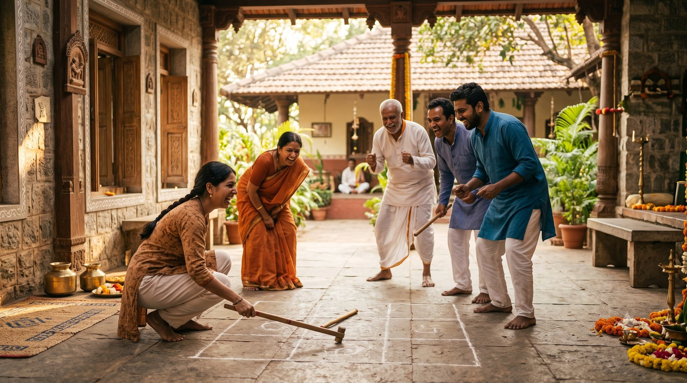
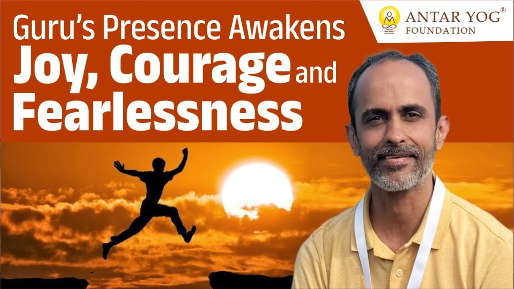

गुरु सान्निध्य शिविर के एक साधक अपना अनुभव साझा करते हैं। कुछ दिन गुरुदेव के साथ रहना, और गुरुदेव का उनके साथ रहना, उनके सोचने का पूरा ढंग बदल गया।
गुरु के सान्निध्य में क्या होता है? साधक के अनुभव में, कुछ दिन गुरुदेव के निकट रहने से सेवा, अर्थार्जन और रिश्तों, जीवन के हर क्षेत्र में बोध हुए। साथ रहना और भोजन करना भी सीख बना, रात के खेलों ने भूला बचपन लौटाया, और सबसे बड़ा बोध था: गुरु साथ हैं, इसलिए डर छोड़कर बड़ा सोचें।
गुरु सान्निध्य में क्या बदलता है? जब जीवन के हर पहलू में बोध होने लगे
सान्निध्य का अर्थ है निकटता (presence)। इस आवासीय शिविर में साधकों ने कुछ दिन गुरुदेव के निकट बिताए।
साधक बताते हैं कि इस दौरान अनेक बोध (revelations) हुए। ये बोध जीवन के हर क्षेत्र से जुड़े थे: गुरु सेवा और गुरु कार्य, व्यक्तिगत अर्थार्जन के साधन, और घर के रिश्ते। हर एक चीज़ के बारे में revelations हुए।
एक ज्ञान, अनेक दिशाएँ
आचार्य जी जब भगवद्गीता सिखाते हैं, तो उसे जीवन के अलग-अलग स्तरों पर खोलते हैं: व्यक्ति, कुटुंब, व्यवसाय, समाज, और राजनीति तक।
शिविर में भी यही हुआ। एक ही बात हर क्षेत्र से जुड़ने लगी। सबसे पहले मन गुरु सेवा, गुरु कार्य, देश कार्य और विश्व कार्य की ओर गया, क्योंकि साधक अभी पूरी तरह उसी में लगे हैं। गुरुदेव ने उन्हें इतनी शक्ति, इतना बोध, इतना ज्ञान दिया है।
फिर प्रश्न उठा: यही बात परिवार में कैसे असर ला सकती है? व्यवसाय में कैसे? हर जगह उसका अलग बोध होता गया।
क्या आपने कभी किसी एक सीख को अपने जीवन के हर क्षेत्र में उतारकर देखा है?
भोजन की थाली भी पाठशाला बन जाए
सीख केवल ज्ञान सत्र तक सीमित नहीं थी। साथ रहना, एक-दूसरे से मिलना, यहाँ तक कि साथ बैठकर भोजन करना, हर क्षण में कोई अनुभव या उदाहरण सामने आ जाता था।
और उनसे एक गहरा बोध आया: कैसे आचरण करना है, कैसे अपने कर्म (doing) को रोकना है और बस होने देना है। यानी बस होने दो, किसी भी चीज़ में स्वयं को उलझाओ मत।
खेल-खेल में खोया बचपन लौट आया
सबसे बड़ा बोध दिन के ज्ञान सत्रों में नहीं, रात के खेलों में हुआ। गुरु सान्निध्य में होने वाले इन खेलों में गुरुदेव साधकों को एक बच्चे की तरह खेलना सिखाते हैं।
हम अपना ही बचपन भूल चुके हैं। उसे वापस कैसे लाना है, गुरुदेव का यह सिखाना साधक के शब्दों में "mind-blowing" था।
आख़िरी बार आप कब एक बच्चे की तरह बिना किसी चिंता के खेले थे?

"मैं हूँ ना, तू क्यों डरता है?"
खेल तो खेल था, पर उसी खेल में गुरुदेव का संदेश उतर आया कि वे साथ हैं, आनंद को डरने की कोई ज़रूरत नहीं; वह आगे बढ़े और जितना बड़ा सोचना है, उतना बड़ा सोचे।
साधक के लिए यही सबसे बड़ा बोध था: गुरुदेव साथ हैं। इसलिए डर छोड़कर जितना बड़ा सोच सकते हैं सोचें, जितना बड़ा विश्व कार्य कर सकते हैं करें।
अंत में साधक ने इस शिविर के लिए गुरुदेव को कोटि-कोटि धन्यवाद दिया।
मुख्य बातें
- गुरु सान्निध्य में जीवन के हर क्षेत्र, सेवा, अर्थार्जन और रिश्तों, के बारे में बोध होता है।
- गीता की तरह एक ही ज्ञान व्यक्ति, परिवार, व्यवसाय और समाज, सब पर लागू होता है।
- साथ रहना और साथ भोजन करना भी सीखने का अवसर है।
- अपने कर्म को रोककर बस होने देना एक गहरा बोध है।
- खेल के माध्यम से गुरुदेव भूला हुआ बचपन लौटाते हैं।
- गुरु साथ हैं, इसलिए डरे बिना बड़ा सोचें और बड़ा कार्य करें।

आगे पढ़ें
कल्पना कीजिए कि आप दिन के आठ से बारह घंटे गुरु के आभामंडल (aura) में बिताते हैं। वहां निरंतर कर्मों का आदान-प्रदान होता रहता है, और आपको पता भी नहीं…

हम में से बहुत लोग मान लेते हैं कि गुरु मिल गए, तो अब सब वही संभाल लेंगे। कर्म भी वही लेंगे, शक्ति भी वही देंगे, और जीवन की हर इच्छा भी वही पूरी…

क्या हमने कभी सच में प्रेम किया है? या जिसे हम प्रेम कहते हैं, वह कुछ और है? आचार्य उपेंद्र जी इस छोटे से प्रवचन में गुरु, प्रेम और शिष्यत्व के गहरे…